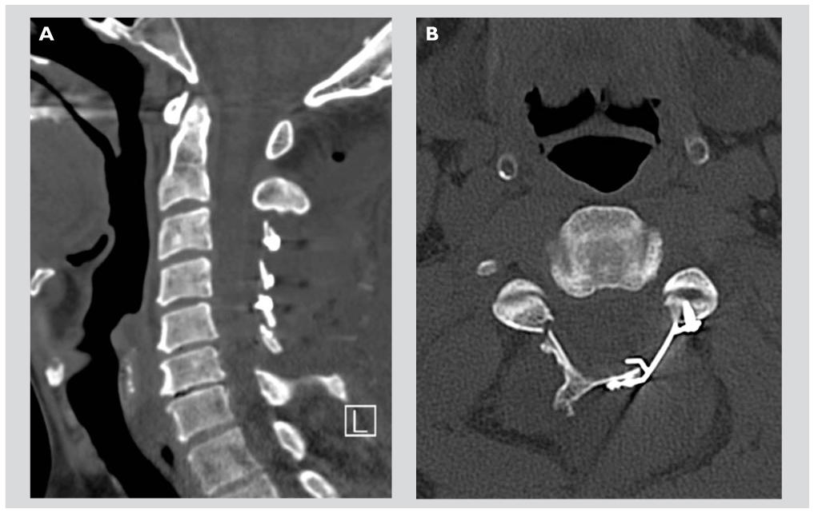

Canal Cervical Étroit

Lorsque le canal lombaire étroit comprime les racines nerveuses qu’il contient, des symptômes très invalidants peuvent apparaître, nécessitant souvent une intervention chirurgicale. Parmi ces symptômes, on trouve la claudication, qui se manifeste par une douleur dans les jambes après avoir marché une certaine distance. Le patient est alors contraint de s’asseoir et d’attendre que la douleur disparaisse avant de pouvoir reprendre la marche. Ce cycle se répète à chaque fois que la douleur revient.
Au milieu du rachis cervical, se trouve le canal rachidien contenant la moelle épinière.
A chaque étage, une racine nerveuse (nerf rachidien) se détache de la moelle épinière à droite et à gauche et quitte le canal par des ouvertures (trous de conjugaisons ou foramens) situées latéralement à hauteur des disques intervertébraux.
Le disque intervertébral normal est une structure aplatie, cylindrique unissant les deux vertèbres et jouant un rôle d’amortisseur. Il est composé d’un noyau central gélatineux (nucleus) et d’un anneau périphérique fibreux (annulus).

Le canal cervical est normalement assez large pour protéger la moelle épinière et ses racines nerveuses. Parfois, à cause d’une anatomie congénitale particulière (canal cervical étroit constitutionnel, présent depuis la naissance) ou à cause d’une arthrose des articulations postérieures (canal cervical étroit dégénératif), celui-ci peut se rétrécir progressivement et entrainer une compression de son contenu, la moelle épinière et les racines nerveuses.
Le canal cervical étroit correspond à une diminution du diamètre du canal rachidien cervical par augmentation d’un ou plusieurs éléments qui le constituent (articulaire postérieur, capsule articulaire, et, disque intervertébral), ou, celui-ci est présent dès la naissance (canal cervical étroit constitutionnel). Avoir un canal cervical étroit n’entraine pas forcement une gêne. Avec l’âge par contre, d’autres problèmes peuvent s’y ajouter et augmenter ainsi le rétrécissement.

Qu’est-ce que la discopathie cervicale ?
- « Discopathie » signifie pathologie du disque.
- Lorsque le disque s’écrase, et perd son rôle d’amortisseur, commence alors la discopathie et les douleurs cervicales (ou cervicalgie, créées par une hyperpression intra-discale et son dysfonctionnement). En effet, le nucleus peut alors migrer au sein de l’annulus et entrainer des cervicalgies aigües ou chroniques. Au maximum, le nucleus peut faire saillie dans le canal rachidien et former alors une protrusion discale ou une hernie discale, dont le volume est très variable.
- Cette protrusion discale peut aggraver des douleurs préexistantes de canal cervical étroit constitutionnel ou dégénératif, en diminuant encore plus le diamètre du canal rachidien.
Conséquences d’un canal cervical étroit
Un canal cervical étroit peut engendrer cinq conséquences :
La cervicalgie
La dégénérescence discale et l’arthrose des articulaires postérieures sont à l’origine de douleur du rachis cervical, ou cervicalgie.
D’évolution progressive avec le vieillissement, elle peut être très invalidante, surtout en cas de discopathie associée.
La névralgie cervico-brachiale
En regard du disque cervical, la racine nerveuse quitte la moelle et le canal rachidien par le foramen.
L’arthrose des articulaires postérieures et l’apparition d’une hernie discale cervicale peuvent être à l’origine d’une compression de la racine nerveuse. Cette compression peut entrainer une douleur dans le bras, la névralgie cervico-brachiale, ou syndrome radiculaire.
La douleur radiculaire présente des caractéristiques communes : un trajet de la douleur bien précis, une douleur exacerbée par tout effort augmentant la pression abdominale (défécation, toux, éternuement), par les mouvements du rachis cervical, par le port de charges lourdes.
À cette cause mécanique (par compression de la racine), la protrusion discale entraîne une inflammation et une irritation de la racine nerveuse, provoquant elles aussi une névralgie cervico-brachiale.
Les paresthésies et les dysesthésies
L’intensité de cette douleur est très variable selon les individus, elle peut s’accompagner de paresthésies (sensation de picotement, de décharge électrique ou de fourmillements dans les mains) ou de dysesthésies (altération de la sensibilité) du membre supérieur, surtout au niveau des mains.
Parfois seules les paresthésies ou les dysesthésies sont présentes, passant le plus souvent inaperçu ou passager. Un avis médical du Docteur TREMLET sera nécessaire pour confirmer le diagnostic.
Le déficit moteur
Parfois le patient n’arrive plus à bien bouger certaines parties de son bras (diminution de force dans les mains, impossibilité de relever la main, ou d’étendre le coude), on parle alors de paralysie partielle ou complète.
On retrouve fréquemment à l’interrogatoire une maladresse d’une ou des 2 mains, avec lâchage d’objet, difficulté dans les gestes fins de la main (boutonner une chemise, écriture,…).
En cas de paralysie, la pression exercée sur le nerf peut entrainer des lésions irréversibles, et la paralysie comme séquelle définitive. Il s’agit donc d’une urgence chirurgicale.
La myélopathie cervico-arthrosique
Un canal cervical étroit peut aussi comprimer les racines nerveuses à destinée des 2 membres inférieurs, cela peut provoquer des problèmes pour marcher (une fatigabilité à la marche, une perte de force dans les cuisses et les jambes, une perte d’équilibre, jusqu’à la paralysie complète) et des troubles sexuels ou sphinctériens (urinaire et fécal).
On parle alors de myélopathie cervico-arthrosique (aux lésions irréversibles fréquentes et très invalidantes). Il s’agit donc là aussi d’une urgence chirurgicale.
Quels traitements pour un canal cervical étroit ?
Le traitement médical
Le traitement médical initial permet de vous soulager en cas de crise aiguë douloureuse.
Il permet de stabiliser les douleurs, mais ne traite pas, ne ralentit pas l’évolution de l’arthrose et du canal cervical étroit, c’est pourquoi l’intervention chirurgicale doit être discutée dès le diagnostic de la pathologie.
Le traitement médical associe une prescription médicamenteuse (antalgique, AINS, décontracturant musculaire, voire des corticoïdes par voie orale) à du repos.
On peut y associer un collier cervical souple en cas de notion de traumatisme, ou de forme très douloureuse (surtout quand les mouvements du cou majorent la douleur).
L’évolution naturelle du canal cervical étroit est vers l’aggravation des douleurs, des paresthésies, de la maladresse des mains jusqu’à l’apparition de déficits moteurs et/ou sensitifs, d’une myélopathie cervico-arthrosique.
Cette évolution peut être sur quelques semaines, quelques mois ou quelques années.
La majorité des études médicales, ces dernières années, ont prouvé une supériorité du traitement chirurgical par rapport au traitement médical quant à la prise en charge du canal cervical étroit. Seul celui-ci permet d’élargir le diamètre du canal médullaire et donc de décomprimer la moelle épinière et les racines nerveuses.

Le traitement chirurgical : opération d’un canal cervical étroit
Le traitement chirurgical sera proposé aux patients dont le traitement médical bien conduit s’est avéré un échec ou de première intention, en urgence en cas de situations à risque de lésion neurologique irréversible.
Ces situations neurologiques à risque sont :
- La présence d’un déficit neurologique moteur (la paralysie), on parle alors de radiculalgie paralysante.
- La présence de troubles sphinctériens (le syndrome de la queue de cheval), perte d’urine ou de selles, constipation opiniâtre récente, impuissance, rétention d’urine avec effort de poussée,…
- La sévérité des douleurs.
La chirurgie consiste en un élargissement du canal rachidien, libérant la racine nerveuse (vous soulageant ainsi de la douleur dans le bras), et libérant la moelle épinière (récupération des déficits neurologiques, amélioration de la marche).
La chirurgie ne permet pas une réparation du disque (les lésions discales sont irréversibles), ainsi, la douleur du cou n’est soulagée que partiellement par l’intervention.
La chirurgie permet une récupération partielle à totale des troubles sphinctériens et des déficits neurologiques moteurs ou sensitifs, variable selon la durée d’évolution des déficits et l’importance de la compression avant intervention. Cette récupération est d’autant plus importante que l’intervention est proche de l’apparition des troubles neurologiques, et plus aléatoire, en cas de durée d’évolution prolongée du déficit (quelques jours suffisent pour abîmer définitivement une racine nerveuse).
Il existe deux techniques possibles pour élargir le canal rachidien :
- À l’avant du cou, par voie antérieure en trans-discale, technique la plus utilisée en cas d’intervention du rachis cervical si la compression est sur 1 ou 2 étages, pour réséquer le(s) disque(s) pathologique(s) et fixer les vertèbres concernées dans une position fonctionnelle : arthrodèse cervicale antérieure.
- Dans la nuque, par voie postérieure, si la compression cervicale est étendue : la libération médullaire ou laminectomie.
Une immobilisation par un collier cervical mousse peut être débutée juste après l’intervention, dont la durée est variable en fonction de la technique chirurgicale utilisée.
Vidéo : Canal Cervical Étroit
(attention certaines images sont à éviter pour les personnes sensibles)